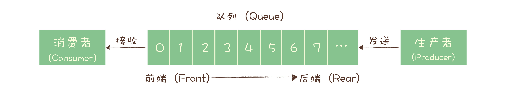
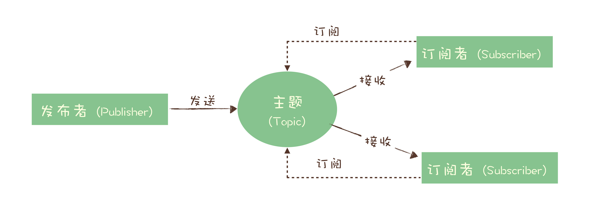
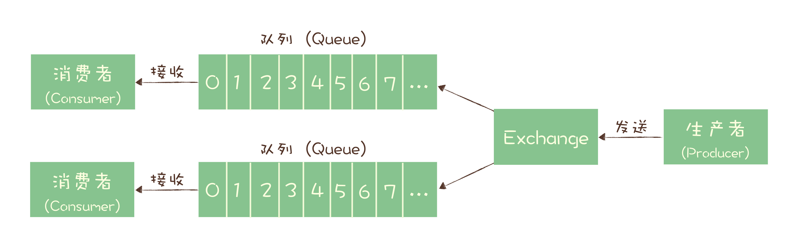
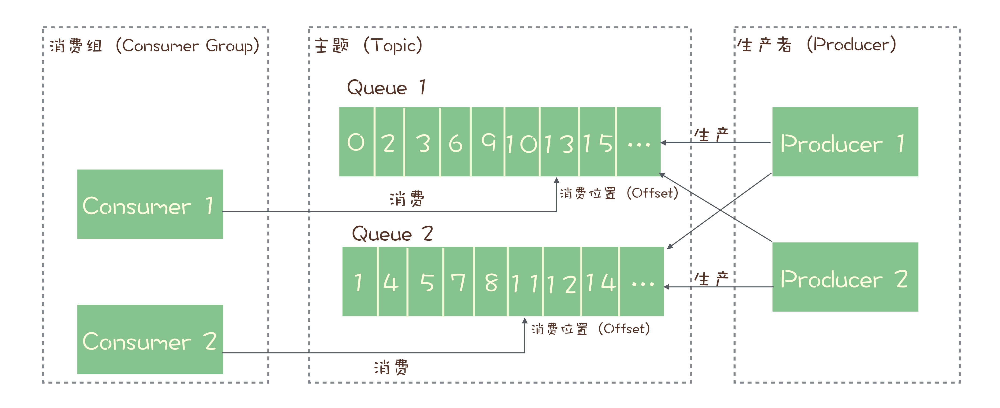
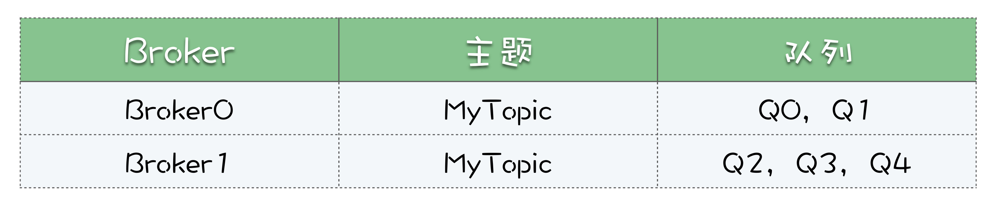
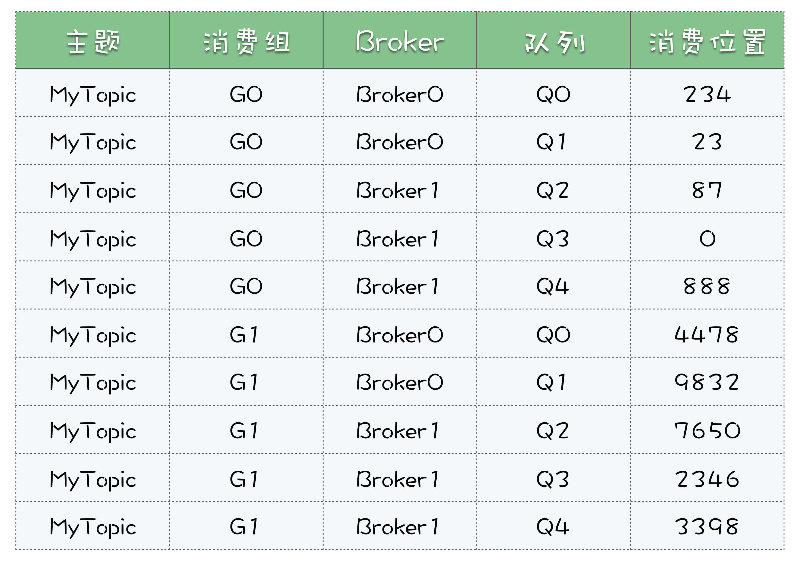

消息队列介绍
消息队列主要应用场景为异步、削峰、解耦。
异步解耦
场景一：用户注册，注册时需要发送短信及邮件，并且需要写库
- 串行模式。流程如下：

缺点：流程不断加长，影响用户体验。
-
显然就会想到使用异步解决，发邮件的同时可以发短信，流程如下：

缺点：流程越多，在注册时需要调很多其他接口，代码耦合严重，出现问题不好排查
-
使用消息队列，流程如下：

注册接口只需要写库，并且推送到消息队列，至于其他业务订阅消息队列即可，达到了异步并且解耦
削峰
场景二：秒杀活动，一般由于瞬时访问量过大，服务器接收过大，会导致流量暴增，相关系统无法处理请求甚至崩溃。而加入消息队列后，系统作为消费者，根据自身应用的能力进行消息的消费，不受大流量的影响。流程如下：

常见消息队列

RocketMQ
主题和队列有什么区别？
最初的消息队列，就是一个严格意义上的队列。在计算机领域，“队列（Queue）”是一种数据结构，有完整而严格的定义。在维基百科中，队列的定义是这样的：
队列是先进先出（FIFO, First-In-First-Out）的线性表（Linear List）。在具体应用中通常用链表或者数组来实现。队列只允许在后端（称为 rear）进行插入操作，在前端（称为 front）进行删除操作。
这个定义里面包含几个关键点，第一个是先进先出，这里面隐含着的一个要求是，在消息入队出队过程中，需要保证这些消息严格有序，按照什么顺序写进队列，必须按照同样的顺序从队列中读出来。不过，队列是没有“读”这个操作的，“读”就是出队，也就是从队列中“删除”这条消息。
**早期的消息队列，就是按照“队列”的数据结构来设计的。**我们一起看下这个图，生产者（Producer）发消息就是入队操作，消费者（Consumer）收消息就是出队也就是删除操作，服务端存放消息的容器自然就称为“队列”。
这就是最初的一种消息模型：队列模型。

如果有多个生产者往同一个队列里面发送消息，这个队列中可以消费到的消息，就是这些生产者生产的所有消息的合集。消息的顺序就是这些生产者发送消息的自然顺序。如果有多个消费者接收同一个队列的消息，这些消费者之间实际上是竞争的关系，每个消费者只能收到队列中的一部分消息，也就是说任何一条消息只能被其中的一个消费者收到。
如果需要将一份消息数据分发给多个消费者，要求每个消费者都能收到全量的消息，例如，对于一份订单数据，风控系统、分析系统、支付系统等都需要接收消息。这个时候，单个队列就满足不了需求，一个可行的解决方式是，为每个消费者创建一个单独的队列，让生产者发送多份。
显然这是个比较蠢的做法，同样的一份消息数据被复制到多个队列中会浪费资源，更重要的是，生产者必须知道有多少个消费者。为每个消费者单独发送一份消息，这实际上违背了消息队列“解耦”这个设计初衷。
为了解决这个问题，演化出了另外一种消息模型：发布 - 订阅模型（Publish-Subscribe Pattern）

在发布 - 订阅模型中，消息的发送方称为发布者（Publisher），消息的接收方称为订阅者（Subscriber），服务端存放消息的容器称为主题（Topic）。发布者将消息发送到主题中，订阅者在接收消息之前需要先“订阅主题”。“订阅”在这里既是一个动作，同时还可以认为是主题在消费时的一个逻辑副本，每份订阅中，订阅者都可以接收到主题的所有消息。
在消息领域的历史上很长的一段时间，队列模式和发布 - 订阅模式是并存的，有些消息队列同时支持这两种消息模型，比如 ActiveMQ。我们仔细对比一下这两种模型，生产者就是发布者，消费者就是订阅者，队列就是主题，并没有本质的区别。它们最大的区别其实就是，一份消息数据能不能被消费多次的问题。
实际上，在这种发布 - 订阅模型中，如果只有一个订阅者，那它和队列模型就基本是一样的了。也就是说，发布 - 订阅模型在功能层面上是可以兼容队列模型的。
现代的消息队列产品使用的消息模型大多是这种发布 - 订阅模型，当然也有例外。
RabbitMQ 的消息模型
这个例外就是 RabbitMQ，它是少数依然坚持使用队列模型的产品之一。那它是怎么解决多个消费者的问题呢？你还记得我在上节课中讲到 RabbitMQ 的一个特色 Exchange 模块吗？在 RabbitMQ 中，Exchange 位于生产者和队列之间，生产者并不关心将消息发送给哪个队列，而是将消息发送给 Exchange，由 Exchange 上配置的策略来决定将消息投递到哪些队列中。

同一份消息如果需要被多个消费者来消费，需要配置 Exchange 将消息发送到多个队列，每个队列中都存放一份完整的消息数据，可以为一个消费者提供消费服务。这也可以变相地实现新发布 - 订阅模型中，“一份消息数据可以被多个订阅者来多次消费”这样的功能。具体的配置你可以参考 RabbitMQ 官方教程，其中一个章节专门是讲如何实现发布订阅的。
RocketMQ 的消息模型
讲完了 RabbitMQ 的消息模型，我们再来看看 RocketMQ。RocketMQ 使用的消息模型是标准的发布 - 订阅模型，在 RocketMQ 的术语表中，生产者、消费者和主题与我在上面讲的发布 - 订阅模型中的概念是完全一样的。
但是，在 RocketMQ 也有队列（Queue）这个概念，并且队列在 RocketMQ 中是一个非常重要的概念，那队列在 RocketMQ 中的作用是什么呢？这就要从消息队列的消费机制说起。
几乎所有的消息队列产品都使用一种非常朴素的“请求 - 确认”机制，确保消息不会在传递过程中由于网络或服务器故障丢失。具体的做法也非常简单。在生产端，生产者先将消息发送给服务端，也就是 Broker，服务端在收到消息并将消息写入主题或者队列中后，会给生产者发送确认的响应。
如果生产者没有收到服务端的确认或者收到失败的响应，则会重新发送消息；在消费端，消费者在收到消息并完成自己的消费业务逻辑（比如，将数据保存到数据库中）后，也会给服务端发送消费成功的确认，服务端只有收到消费确认后，才认为一条消息被成功消费，否则它会给消费者重新发送这条消息，直到收到对应的消费成功确认。
这个确认机制很好地保证了消息传递过程中的可靠性，但是，引入这个机制在消费端带来了一个不小的问题。什么问题呢？为了确保消息的有序性，在某一条消息被成功消费之前，下一条消息是不能被消费的，否则就会出现消息空洞，违背了有序性这个原则。
也就是说，每个主题在任意时刻，至多只能有一个消费者实例在进行消费，那就没法通过水平扩展消费者的数量来提升消费端总体的消费性能。为了解决这个问题，RocketMQ 在主题下面增加了队列的概念。
**每个主题包含多个队列，通过多个队列来实现多实例并行生产和消费。**需要注意的是，RocketMQ 只在队列上保证消息的有序性，主题层面是无法保证消息的严格顺序的。
RocketMQ 中，订阅者的概念是通过消费组（Consumer Group）来体现的。每个消费组都消费主题中一份完整的消息，不同消费组之间消费进度彼此不受影响，也就是说，一条消息被 Consumer Group1 消费过，也会再给 Consumer Group2 消费。
消费组中包含多个消费者，同一个组内的消费者是竞争消费的关系，每个消费者负责消费组内的一部分消息。如果一条消息被消费者 Consumer1 消费了，那同组的其他消费者就不会再收到这条消息。
在 Topic 的消费过程中，由于消息需要被不同的组进行多次消费，所以消费完的消息并不会立即被删除，这就需要 RocketMQ 为每个消费组在每个队列上维护一个消费位置（Consumer Offset），这个位置之前的消息都被消费过，之后的消息都没有被消费过，每成功消费一条消息，消费位置就加一。这个消费位置是非常重要的概念，我们在使用消息队列的时候，丢消息的原因大多是由于消费位置处理不当导致的。
RocketMQ 的消息模型中，比较关键的概念就是这些了。为了便于你理解，我画了下面这张图：

例子
假设有一个主题 MyTopic，我们为主题创建 5 个队列，分布到 2 个 Broker 中。

先说消息生产这一端，假设我们有 3 个生产者实例：Produer0，Produer1 和 Producer2。
这 3 个生产者是如何对应到 2 个 Broker 的，又是如何对应到 5 个队列的呢？这个很简单，不用对应，随便发。每个生产者可以在 5 个队列中轮询发送，也可以随机选一个队列发送，或者只往某个队列发送，这些都可以。比如 Producer0 要发 5 条消息，可以都发到队列 Q0 里面，也可以 5 个队列每个队列发一条。
然后说消费端，很多同学没有搞清楚消费组、消费者和队列这几个概念的对应关系。
每个消费组就是一份订阅，它要消费主题 MyTopic 下，所有队列的全部消息。注意，队列里的消息并不是消费掉就没有了，这里的“消费”，只是去队列里面读了消息，并没有删除，消费完这条消息还是在队列里面。
多个消费组在消费同一个主题时，消费组之间是互不影响的。比如我们有 2 个消费组：G0 和 G1。G0 消费了哪些消息，G1 是不知道的，也不用知道。G0 消费过的消息，G1 还可以消费。即使 G0 积压了很多消息，对 G1 来说也没有任何影响。
然后我们再说消费组的内部，一个消费组中可以包含多个消费者的实例。比如说消费组 G1，包含了 2 个消费者 C0 和 C1，那这 2 个消费者又是怎么和主题 MyTopic 的 5 个队列对应的呢？
由于消费确认机制的限制，这里面有一个原则是，在同一个消费组里面，每个队列只能被一个消费者实例占用。至于如何分配，这里面有很多策略，我就不展开说了。总之保证每个队列分配一个消费者就行了。比如，我们可以让消费者 C0 消费 Q0，Q1 和 Q2，C1 消费 Q3 和 Q4，如果 C0 宕机了，会触发重新分配，这时候 C1 同时消费全部 5 个队列。
再强调一下，队列占用只是针对消费组内部来说的，对于其他的消费组来说是没有影响的。比如队列 Q2 被消费组 G1 的消费者 C1 占用了，对于消费组 G2 来说，是完全没有影响的，G2 也可以分配它的消费者来占用和消费队列 Q2。
最后说一下消费位置，每个消费组内部维护自己的一组消费位置，每个队列对应一个消费位置。消费位置在服务端保存，并且，消费位置和消费者是没有关系的。每个消费位置一般就是一个整数，记录这个消费组中，这个队列消费到哪个位置了，这个位置之前的消息都成功消费了，之后的消息都没有消费或者正在消费。
我把咱们这个例子的消费位置整理成下面的表格，便于你理解。

你可以看到，这个表格中并没有消费者这一列，也就是说消费者和消费位置是没有关系的。
Kafka 的消息模型
我们再来看看另一种常见的消息队列 Kafka，Kafka 的消息模型和 RocketMQ 是完全一样的，我刚刚讲的所有 RocketMQ 中对应的概念，和生产消费过程中的确认机制，都完全适用于 Kafka。唯一的区别是，在 Kafka 中，队列这个概念的名称不一样，Kafka 中对应的名称是“分区（Partition）”，含义和功能是没有任何区别的。
小结
我们来总结一下本节课学习的内容。首先我们讲了队列和主题的区别，这两个概念的背后实际上对应着两种不同的消息模型：队列模型和发布 - 订阅模型。然后你需要理解，这两种消息模型其实并没有本质上的区别，都可以通过一些扩展或者变化来互相替代。
常用的消息队列中，RabbitMQ 采用的是队列模型，但是它一样可以实现发布 - 订阅的功能。RocketMQ 和 Kafka 采用的是发布 - 订阅模型，并且二者的消息模型是基本一致的。
最后提醒你一点，我这节课讲的消息模型和相关的概念是业务层面的模型，深刻理解业务模型有助于你用最佳的姿势去使用消息队列。
但业务模型不等于就是实现层面的模型。比如说 MySQL 和 Hbase 同样是支持 SQL 的数据库，它们的业务模型中，存放数据的单元都是“表”，但是在实现层面，没有哪个数据库是以二维表的方式去存储数据的，MySQL 使用 B+ 树来存储数据，而 HBase 使用的是 KV 的结构来存储。同样，像 Kafka 和 RocketMQ 的业务模型基本是一样的，并不是说他们的实现就是一样的，实际上这两个消息队列的实现是完全不同的。
思考题
最后给大家留一个思考题。刚刚我在介绍 RocketMQ 的消息模型时讲过，在消费的时候，为了保证消息的不丢失和严格顺序，每个队列只能串行消费，无法做到并发，否则会出现消费空洞的问题。那如果放宽一下限制，不要求严格顺序，能否做到单个队列的并行消费呢？如果可以，该如何实现？欢迎在留言区与我分享讨论。
感谢阅读，如果你觉得这篇文章对你有一些启发，也欢迎把它分享给你的朋友。
架构

RocketMQ架构上主要分为四部分，如上图所示:
-
Producer：生产者，支持分布式集群方式部署。Producer通过MQ的负载均衡模块选择相应的Broker集群队列进行消息投递，投递的过程支持快速失败并且低延迟。RocketMQ 提供了三种方式发送消息：同步、异步和单向
-
同步发送：同步发送指消息发送方发出数据后会在收到接收方发回响应之后才发下一个数据包。一般用于重要通知消息，例如重要通知邮件、营销短信。
-
异步发送：异步发送指发送方发出数据后，不等接收方发回响应，接着发送下个数据包，一般用于可能链路耗时较长而对响应时间敏感的业务场景，例如用户视频上传后通知启动转码服务。
-
单向发送：单向发送是指只负责发送消息而不等待服务器回应且没有回调函数触发，适用于某些耗时非常短但对可靠性要求并不高的场景，例如日志收集。
-
-
Consumer：消费者，支持分布式集群方式部署。支持以push推，pull拉两种模式对消息进行消费。同时也支持集群方式和广播方式的消费，它提供实时消息订阅机制，可以满足大多数用户的需求。
-
Pull：拉取型消费者（Pull Consumer）主动从消息服务器拉取信息，只要批量拉取到消息，用户应用就会启动消费过程，所以 Pull 称为主动消费型。
-
Push：推送型消费者（Push Consumer）封装了消息的拉取、消费进度和其他的内部维护工作，将消息到达时执行的回调接口留给用户应用程序来实现。所以 Push 称为被动消费类型，但从实现上看还是从消息服务器中拉取消息，不同于 Pull 的是 Push 首先要注册消费监听器，当监听器处触发后才开始消费消息。
-
集群消费: 默认就为该模式，相同Consumer Group的每个Consumer实例平均分摊消息。如果某个消费者挂掉，分组内其它消费者会接替挂掉的消费者继续消费。
-
广播消费：消息会发给消费者组中的每一个消费者进行消费。
-
-
NameServer：NameServer是一个非常简单的Topic路由注册中心，其角色类似Dubbo中的zookeeper，支持Broker的动态注册与发现。主要包括两个功能：Broker管理，NameServer接受Broker集群的注册信息并且保存下来作为路由信息的基本数据。然后提供心跳检测机制，检查Broker是否还存活；路由信息管理，每个NameServer将保存关于Broker集群的整个路由信息和用于客户端查询的队列信息。然后Producer和Conumser通过NameServer就可以知道整个Broker集群的路由信息，从而进行消息的投递和消费。NameServer通常也是集群的方式部署，各实例间相互不进行信息通讯。Broker是向每一台NameServer注册自己的路由信息，所以每一个NameServer实例上面都保存一份完整的路由信息。当某个NameServer因某种原因下线了，Broker仍然可以向其它NameServer同步其路由信息，Producer,Consumer仍然可以动态感知Broker的路由的信息。
-
BrokerServer：Broker主要负责消息的存储、投递和查询以及服务高可用保证，为了实现这些功能，Broker包含了以下几个重要子模块。
- Remoting Module：整个Broker的实体，负责处理来自clients端的请求。
- Client Manager：负责管理客户端(Producer/Consumer)和维护Consumer的Topic订阅信息
- Store Service：提供方便简单的API接口处理消息存储到物理硬盘和查询功能。
- HA Service：高可用服务，提供Master Broker 和 Slave Broker之间的数据同步功能。
- Index Service：根据特定的Message key对投递到Broker的消息进行索引服务，以提供消息的快速查询。

名词解释
Message
Message（消息）就是要传输的信息。
一条消息必须有一个主题（Topic），主题可以看做是你的信件要邮寄的地址。
一条消息也可以拥有一个可选的标签（Tag）和额处的键值对，它们可以用于设置一个业务 Key(messageId) 并在 Broker 上查找此消息以便在开发期间查找问题。
Topic
Topic（主题）可以看做消息的规类，它是消息的第一级类型。比如一个电商系统可以分为：交易消息、物流消息等，一条消息必须有一个 Topic 。
Topic 与生产者和消费者的关系非常松散，一个 Topic 可以有0个、1个、多个生产者向其发送消息，一个生产者也可以同时向不同的 Topic 发送消息。
一个 Topic 也可以被 0个、1个、多个消费者订阅。
Tag
Tag（标签）可以看作子主题，它是消息的第二级类型，用于为用户提供额外的灵活性。使用标签，同一业务模块不同目的的消息就可以用相同 Topic 而不同的 Tag 来标识。比如交易消息又可以分为：交易创建消息、交易完成消息等，一条消息可以没有 Tag 。
Group
分组，一个组可以订阅多个Topic。
分为ProducerGroup，ConsumerGroup，代表某一类的生产者和消费者，一般来说同一个服务可以作为Group，同一个Group一般来说发送和消费的消息都是一样的
Queue
在Kafka中叫Partition，每个Queue内部是有序的，在RocketMQ中分为读和写两种队列，一般来说读写队列数量一致，如果不一致就会出现很多问题。
Message Queue
Message Queue（消息队列），主题被划分为一个或多个子主题，即消息队列。
一个 Topic 下可以设置多个消息队列，发送消息时执行该消息的 Topic ，RocketMQ 会轮询该 Topic 下的所有队列将消息发出去。
消息的物理管理单位。一个Topic下可以有多个Queue，Queue的引入使得消息的存储可以分布式集群化，具有了水平扩展能力。
Offset
在RocketMQ 中，所有消息队列都是持久化，长度无限的数据结构，所谓长度无限是指队列中的每个存储单元都是定长，访问其中的存储单元使用Offset 来访问，Offset 为 java long 类型，64 位，理论上在 100年内不会溢出，所以认为是长度无限。
也可以认为 Message Queue 是一个长度无限的数组，Offset 就是下标。
Message Order
Message Order（消息顺序）有两种：Orderly（顺序消费）和Concurrently（并行消费）。
-
消息有序指的是可以按照消息的发送顺序来消费(FIFO)。RocketMQ可以严格的保证消息有序，可以分为分区有序或者全局有序。
顺序消费的原理解析，在默认的情况下消息发送会采取Round Robin轮询方式把消息发送到不同的queue(分区队列)；而消费消息的时候从多个queue上拉取消息，这种情况发送和消费是不能保证顺序。但是如果控制发送的顺序消息只依次发送到同一个queue中，消费的时候只从这个queue上依次拉取，则就保证了顺序。当发送和消费参与的queue只有一个，则是全局有序；如果多个queue参与，则为分区有序，即相对每个queue，消息都是有序的。
public static void main(String[] args) throws Exception { DefaultMQProducer producer = new DefaultMQProducer("order_queue"); producer.setNamesrvAddr("127.0.0.1:9876"); producer.start(); String[] tags = new String[]{"TagA", "TagC", "TagD"}; // 订单列表 List<OrderStep> orderList = new Producer().buildOrders(); Date date = new Date(); SimpleDateFormat sdf = new SimpleDateFormat("yyyy-MM-dd HH:mm:ss"); String dateStr = sdf.format(date); for (int i = 0; i < 10; i++) { // 加个时间前缀 String body = dateStr + " Hello RocketMQ " + orderList.get(i); Message msg = new Message("TopicTest", tags[i % tags.length], "KEY" + i, body.getBytes()); SendResult sendResult = producer.send(msg, new MessageQueueSelector() { @Override public MessageQueue select(List<MessageQueue> mqs, Message msg, Object arg) { Long id = (Long) arg; //根据订单id选择发送queue // 通过取余保证相同id的订单进入同一个队列，消费时会顺序消费，从而保证了订单的创建过程（创建，完成，付款） long index = id % mqs.size(); return mqs.get((int) index); } }, orderList.get(i).getOrderId());//订单id System.out.println(String.format("SendResult status:%s, queueId:%d, body:%s", sendResult.getSendStatus(), sendResult.getMessageQueue().getQueueId(), body)); } producer.shutdown(); } -
并行消费不再保证消息顺序，消费的最大并行数量受每个消费者客户端指定的线程池限制。
更多名词解释参考官网：https://github.com/apache/rocketmq/blob/master/docs/cn/concept.md
通信机制
RocketMQ消息队列集群主要包括NameServer、Broker(Master/Slave)、Producer、Consumer4个角色，基本通讯流程如下：
(1) Broker启动后需要完成一次将自己注册至NameServer的操作；随后每隔30s时间定时向NameServer上报Topic路由信息。
(2) 消息生产者Producer作为客户端发送消息时候，需要根据消息的Topic从本地缓存的TopicPublishInfoTable获取路由信息。如果没有则更新路由信息会从NameServer上重新拉取，同时Producer会默认每隔30s向NameServer拉取一次路由信息。
(3) 消息生产者Producer根据2）中获取的路由信息选择一个队列（MessageQueue）进行消息发送；Broker作为消息的接收者接收消息并落盘存储。
(4) 消息消费者Consumer根据2）中获取的路由信息，并在完成客户端的负载均衡后，选择其中的某一个或者某几个消息队列来拉取消息并进行消费。
RocketMQ中的负载均衡
RocketMQ中的负载均衡都在Client端完成，具体来说的话，主要可以分为Producer端发送消息时候的负载均衡和Consumer端订阅消息的负载均衡。
-
producer端
Producer端在发送消息的时候，会先根据Topic找到指定的TopicPublishInfo，在获取了TopicPublishInfo路由信息后，RocketMQ的客户端在默认方式下selectOneMessageQueue()方法会从TopicPublishInfo中的messageQueueList中选择一个队列（MessageQueue）进行发送消息。具体的容错策略均在MQFaultStrategy这个类中定义。这里有一个sendLatencyFaultEnable开关变量，如果开启，在随机递增取模的基础上，再过滤掉not available的Broker代理。所谓的"latencyFaultTolerance"，是指对之前失败的，按一定的时间做退避。例如，如果上次请求的latency超过550Lms，就退避3000Lms；超过1000L，就退避60000L；如果关闭，采用随机递增取模的方式选择一个队列（MessageQueue）来发送消息，latencyFaultTolerance机制是实现消息发送高可用的核心关键所在。
-
Consumer的负载均衡
在RocketMQ中，Consumer端的两种消费模式（Push/Pull）都是基于拉模式来获取消息的，而在Push模式只是对pull模式的一种封装，其本质实现为消息拉取线程在从服务器拉取到一批消息后，然后提交到消息消费线程池后，又“马不停蹄”的继续向服务器再次尝试拉取消息。如果未拉取到消息，则延迟一下又继续拉取。在两种基于拉模式的消费方式（Push/Pull）中，均需要Consumer端在知道从Broker端的哪一个消息队列—队列中去获取消息。因此，有必要在Consumer端来做负载均衡，即Broker端中多个MessageQueue分配给同一个ConsumerGroup中的哪些Consumer消费。
1、Consumer端的心跳包发送
在Consumer启动后，它就会通过定时任务不断地向RocketMQ集群中的所有Broker实例发送心跳包（其中包含了，消息消费分组名称、订阅关系集合、消息通信模式和客户端id的值等信息）。Broker端在收到Consumer的心跳消息后，会将它维护在ConsumerManager的本地缓存变量—consumerTable，同时并将封装后的客户端网络通道信息保存在本地缓存变量—channelInfoTable中，为之后做Consumer端的负载均衡提供可以依据的元数据信息。
2、Consumer端实现负载均衡的核心类—RebalanceImpl
在Consumer实例的启动流程中的启动MQClientInstance实例部分，会完成负载均衡服务线程—RebalanceService的启动（每隔20s执行一次）。通过查看源码可以发现，RebalanceService线程的run()方法最终调用的是RebalanceImpl类的rebalanceByTopic()方法，该方法是实现Consumer端负载均衡的核心。这里，rebalanceByTopic()方法会根据消费者通信类型为“广播模式”还是“集群模式”做不同的逻辑处理。这里主要来看下集群模式下的主要处理流程：
(1) 从rebalanceImpl实例的本地缓存变量—topicSubscribeInfoTable中，获取该Topic主题下的消息消费队列集合（mqSet）；
(2) 根据topic和consumerGroup为参数调用mQClientFactory.findConsumerIdList()方法向Broker端发送获取该消费组下消费者Id列表的RPC通信请求（Broker端基于前面Consumer端上报的心跳包数据而构建的consumerTable做出响应返回，业务请求码：GET_CONSUMER_LIST_BY_GROUP）；
(3) 先对Topic下的消息消费队列、消费者Id排序，然后用消息队列分配策略算法（默认为：消息队列的平均分配算法），计算出待拉取的消息队列。这里的平均分配算法，类似于分页的算法，将所有MessageQueue排好序类似于记录，将所有消费端Consumer排好序类似页数，并求出每一页需要包含的平均size和每个页面记录的范围range，最后遍历整个range而计算出当前Consumer端应该分配到的记录（这里即为：MessageQueue）。

(4) 然后，调用updateProcessQueueTableInRebalance()方法，具体的做法是，先将分配到的消息队列集合（mqSet）与processQueueTable做一个过滤比对。

- 上图中processQueueTable标注的红色部分，表示与分配到的消息队列集合mqSet互不包含。将这些队列设置Dropped属性为true，然后查看这些队列是否可以移除出processQueueTable缓存变量，这里具体执行removeUnnecessaryMessageQueue()方法，即每隔1s 查看是否可以获取当前消费处理队列的锁，拿到的话返回true。如果等待1s后，仍然拿不到当前消费处理队列的锁则返回false。如果返回true，则从processQueueTable缓存变量中移除对应的Entry；
- 上图中processQueueTable的绿色部分，表示与分配到的消息队列集合mqSet的交集。判断该ProcessQueue是否已经过期了，在Pull模式的不用管，如果是Push模式的，设置Dropped属性为true，并且调用removeUnnecessaryMessageQueue()方法，像上面一样尝试移除Entry；
最后，为过滤后的消息队列集合（mqSet）中的每个MessageQueue创建一个ProcessQueue对象并存入RebalanceImpl的processQueueTable队列中（其中调用RebalanceImpl实例的computePullFromWhere(MessageQueue mq)方法获取该MessageQueue对象的下一个进度消费值offset，随后填充至接下来要创建的pullRequest对象属性中），并创建拉取请求对象—pullRequest添加到拉取列表—pullRequestList中，最后执行dispatchPullRequest()方法，将Pull消息的请求对象PullRequest依次放入PullMessageService服务线程的阻塞队列pullRequestQueue中，待该服务线程取出后向Broker端发起Pull消息的请求。其中，可以重点对比下，RebalancePushImpl和RebalancePullImpl两个实现类的dispatchPullRequest()方法不同，RebalancePullImpl类里面的该方法为空，这样子也就回答了上一篇中最后的那道思考题了。
消息消费队列在同一消费组不同消费者之间的负载均衡，其核心设计理念是在一个消息消费队列在同一时间只允许被同一消费组内的一个消费者消费，一个消息消费者能同时消费多个消息队列。